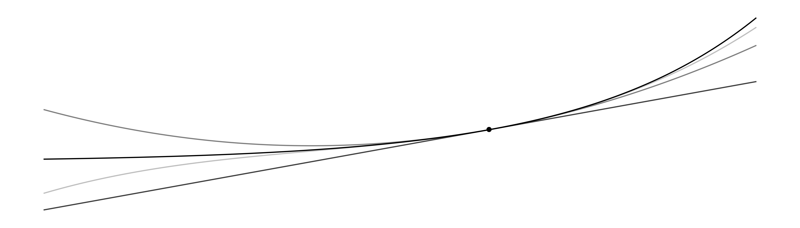
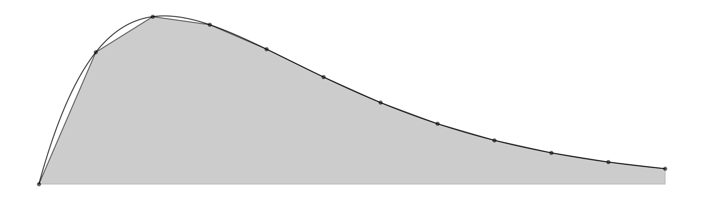
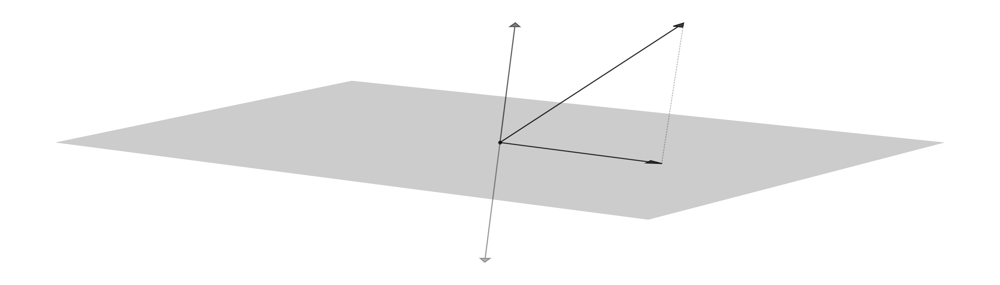
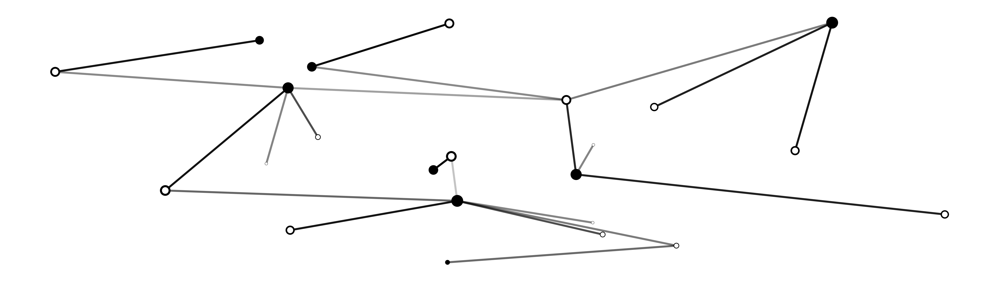
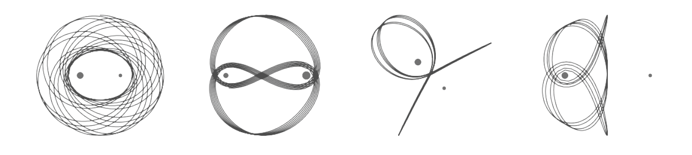
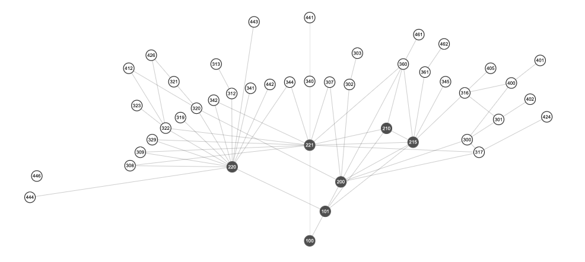
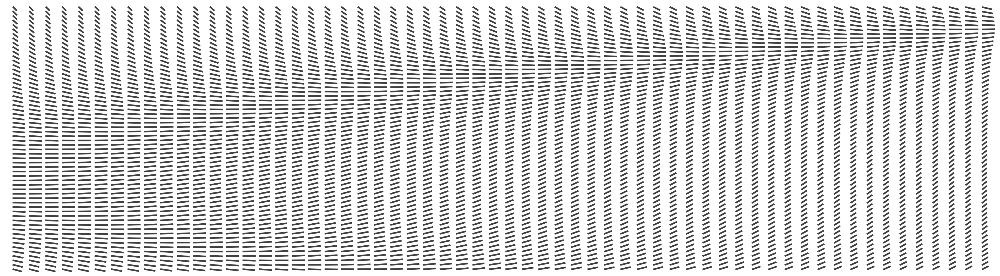
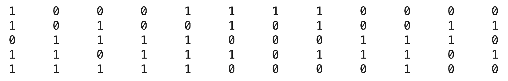

Introduction to differential calculus for science and engineering. Course design includes weekly 2-hour large lectures and 1-hour small classes for active learning with group worksheets. Course work includes group projects, online homework and exams. See Course Outline 2024W1 for more info. Check out the CLP Textbook for notes, exercises and examples.
Introduction to mathematical software and numerical methods. Basic computer programming including numbers, arrays, functions, vectorization and iteration. Sequences and series, root finding, numerical integration, numerical methods for differential equations, systems of linear equations, eigenvalues and mathematical graphics. See Course Outline 2024W2 for more info.
Web-based open source computational resources are at the core of the course design. Students login Syzygy whenever and wherever they choose and write Python code in Jupyter notebooks using their own devices. Lectures are live-coding events in which students applied programming to standard numerical methods in mathematics. Check out Mathematical Python for examples and exercises.
Linear systems of equations, LU decomposition, condition number, orthogonal projection, QR decomposition, least squares approximation, orthogonal diagonalization, singular value decomposition, discrete Fourier transform. Applications: interpolation, data fitting, principal component analysis, digital signal processing. Matrix computations with mathematical software Python, SciPy and Jupyter. See Course Outline 2025W1 for more info. Check out MATH 307 Course Notes for notes and examples.
Project-based course which emphasizes mathematical research, communication, collaboration, computation and reflection. Students collaborate on group projects which explore real-world applications of linear programming, combinatorial optimization and convex optimization. See Course Outline 2024W2 for more info.
Mathematical Python is a web-based open textbook on mathematical computing with Python, SciPy and Jupyter. The book consists of 25+ Jupyter notebooks covering markdown and LaTeX, basic Python programming, NumPy, SciPy and Matplotlib, optimization, numerical integration, linear systems equations, eigenvalues and eigenvectors, and ordinary differential equations.
Interactive data visualization of the undergraduate mathematics program at UBC built with D3. Students navigate course prerequisites and program requirements. Check out ubcmath.github.io/coursemap to explore the map.
Computational Teaching and Learning in Mathematics (CTLMath) is an organizational framework for teaching and learning with open source mathematical software and web-based ocmputational resources. See Python for UBC Math and MATLAB for UBC Math for examples of computation in math courses at UBC. Check out BIRS Workshop for more examples and resources.
mbgrader (math batch grader) is a custom web application for batch grading MATLAB assignments. The application is built with Python and Flask, SQLite and BackboneJS. The application reads m-files, searches for values attached to particular variable names and groups similar values together into batches. Grader does not need to have solutions instead mbgrader allows graders to provide thoughtful, individualized feedback to students since all responses are reduced to a small number of batches per question. Check it out on GitHub.
See CV (updated August 2025)
Department of Mathematics
The University of British Columbia
Room 229E, 1984 Mathematics Road
Vancouver, BC
Canada V6T 1Z2
pwalls@math.ubc.ca
github.com/patrickwalls
604-822-3045